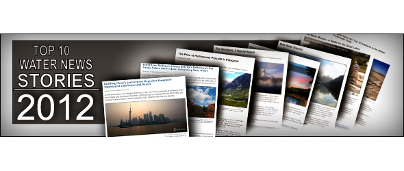
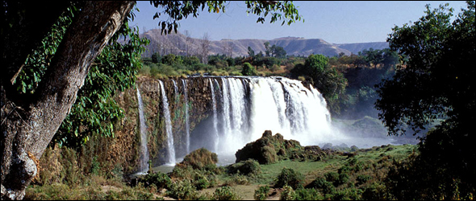
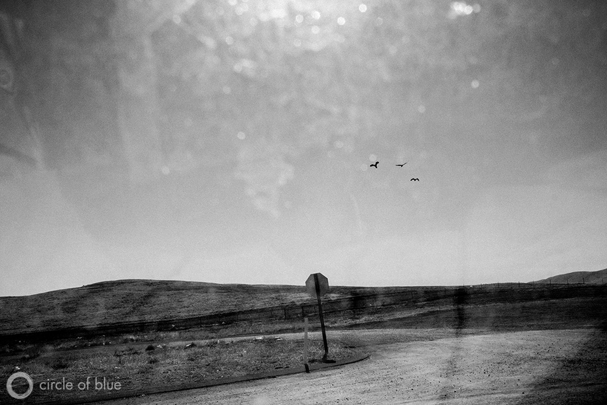
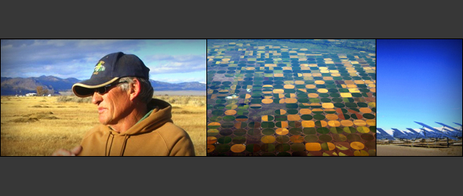
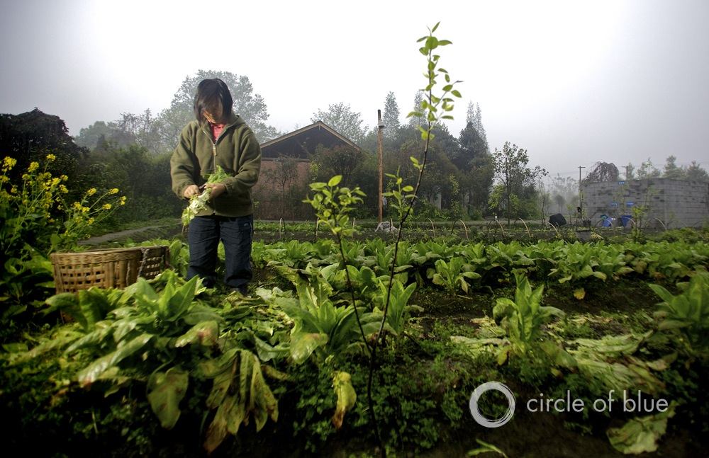
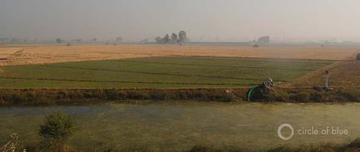

Top 10 Water News Stories of 2012
A Remarkable Year In January 2012, findings from our 2011
Choke Point: China report were cited in a congressional hearing of the U.S.-China Economic and Security Review Commission in Washington, D.C. In April, Secretary of State Hillary Clinton featured 14 of our images during her speech opening the U.S. State Department’s World Water Day event.In June, the Rockefeller Foundation recognized the importance — and challenges — of our work and our mission with the $US 100,000 Centennial Innovation Award.In September, Circle of Blue director J.Carl Ganter was named vice-chairman of the World Economic Forum’s Global Agenda Council on Water Security for 2013, an honor that recognizes him as one of the most prominent experts on the condition of the world’s water and possible solutions to the freshwater crisis.And in December, in a particularly gratifying response to our work, Circle of Blue received the Traverse City Central High School Junior Achievement Class’s philanthropy award of $US 84.10.From the big stage to the small classroom, our work is being recognized by readers like you.Thank you.
Posted On: 2013-01-11T00:00:00
Posted By: Allison Voglesong






Content Date: 2013-01-11
Download Date: 2021-05-13
Document ID: L0C04BWUT